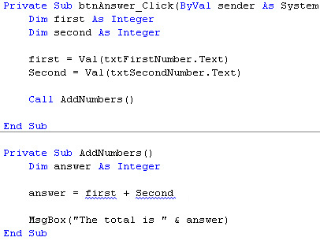
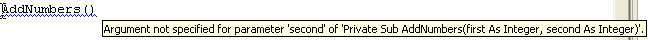

Using Parameters in your Subs
This lesson is part of an ongoing tutorial. The first part is here: Create your own Subs in VB .NET
In this lessons, we're going to be exploring Parameters. let's get straight to it.
Add two more textboxes to the form you created in the previous part. then do the following:
- Set the Name property of the first Textbox to txtFirstNumber
- Set the Name property of the second Textbox to txtSecondNumber
- Add a new button to your Form and set the Text property to "Get Answer"
The two textboxes will contain numbers, one for each box. We'll write code to add the two numbers together, but in our own Sub. When the button is clicked, a Message Box will pop up revealing the answer to the sum of the numbers in the textboxes.
Double click your new button to bring up the code window. Click outside of the button code, just after End Sub, but before End Class. Type the following code:
Private Sub AddNumbers()
Dim first As Integer
Dim second As Integer
Dim answer As Integer
first = Val(txtFirstNumber.Text)
second = Val(txtSecondNumber.Text)
answer = first + second
MsgBox("The total is " & answer)
End Sub
We have created a Sub to add together the two numbers from the Textboxes. The code is very simple, and you should be able to follow it without any problems.
Now add this line to the code for your "Get Answer" button:
Call AddNumbers()
Run your programme. Type a number in each of the two Textboxes, and click your button to make sure your programme works (did the Message Box display?) Stop the programme and return to the design environment.
Chop the two lines of code for the Textboxes from the Sub and put them into the button. Your two sections of code should now look like this:

The reason why there are two wiggly lines under first and Second is that the AddNumbers Sub knows nothing about these two variables. We've only declared one variable inside the Subroutine - answer. To get rid of the wiggly lines, we can set up something called a Parameter. Well, two parameters.
To put it simply, a Parameter is a value that we want to pass from one code section to another. What we want to do is to pass the values we gathered from our button code and hand them over to our AddNumbers Sub. So how do we do that?
Change the Private Sub AddNumbers() line to this:
Private Sub AddNumbers( first As Integer, second As Integer )
When you press your return key, VB changes the part in round brackets to this in versions of VB Express 2010 or less:
( ByVal first As Integer, ByVal second As Integer )
It's added a curious term - ByVal. (For 2012 users, the ByVal is hidden.) We'll explain what that is in a moment. For now, concentrate on the Parameters. The parameters are what we want to hand to our Subroutine. We want to hand an integer variable called first, and an integer variable called second. Whatever values are currently stored in these two variables will be handed to our Sub.
No more reading these lessons online - get the eBook here!
But we need to change our Calling line, the one from our button. This line now has a wiggly line under it, signifying that something is wrong. Remember, it was this:
Call AddNumbers()
If you hold your mouse over the AddNumbers() you might see this tip appear:

What this is telling you is that your AddNumbers Sub takes some Parameters (They are called Arguments when you pass them, and Parameters when they are received. Because this is somewhat confusing, we'll stick to calling them Parameters.) In other words, you don't have any option: if you want to call this Sub, you have to add values for the parameters you set up.
So change you Calling line to this:
Call AddNumbers( first, second )
(If the second inside your Sub has changed to Second(). Delete
the round brackets.)
Again, we use the parentheses. And in between the parentheses are our two variables. They don't have to have the same names. Whatever you call your variables in the AddNumbers Sub does not have to be the same names as the calling line. The variable names can be entirely different. But the values in the variables get passed in the order you set them up. In our case the value in the variable first will get passed to the first variable in our AddNumbers Sub; the value in the variable second will get passed to the next variable we set up in our AddNumbers Sub.
Run your programme and check that it is working properly, now that you have changed the calling line. When you are done, change the variable names for your AddNumbers Sub to this (2012 users don't need to add ByVal.):
Private Sub AddNumbers(ByVal first2 As Integer, ByVal second2 As Integer)
Dim answer As Integer
answer = first2 + second2
MsgBox "The total is " & answer
End Sub
Here, we have changed the names in our Sub. The variable names are now different from the ones in the calling line They are now first2 and second2. But will it still work? Test your programme out and check it. You should find that it does.
So to sum up, we can use a Sub to create our own code segment. We use this Sub just by referring to it by name. If we want to pass any values to our Sub, we can set up Parameters in between the parentheses.
Exercise M
Create a Sub to check a Textbox for a valid email address, or adapt the one you already have. Pass whatever is entered in the Textbox to a variable called "email". Pass the value from this variable to your Sub by using a Parameter. When a button is clicked, a message box should pop up telling the user if the email address was wrong.
In the next part, we'll take a look at those two curious terms, ByVal and ByRef.